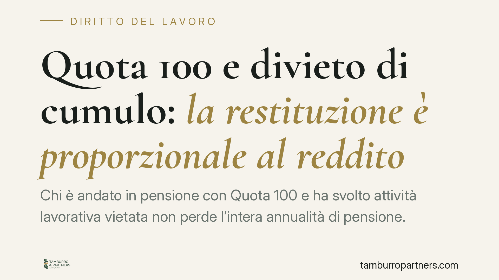

Quota 100 e divieto di cumulo: la restituzione è proporzionale al reddito
Chi è andato in pensione con Quota 100 e ha svolto attività lavorativa vietata non perde l'intera annualità di pensione. Secondo un recente orientamento della Cassazione, la somma da restituire all'INPS è pari soltanto al reddito da lavoro effettivamente percepito. Un principio di proporzionalità che riduce sensibilmente l'esposizione economica dei pensionati coinvolti.

Il caso
Un pensionato era andato in quiescenza con Quota 100, l'uscita anticipata introdotta per il triennio 2019-2021. Durante il periodo di incompatibilità aveva però svolto attività lavorativa, violando il divieto di cumulo tra pensione e redditi da lavoro.
L'INPS aveva reagito chiedendo la restituzione dell'intera annualità di pensione percepita nell'anno della violazione. La Corte d'appello di Bari aveva confermato questa impostazione. La Corte di cassazione, sezione lavoro, ha invece accolto la lettura più favorevole al pensionato: la somma da restituire non coincide con tutta la pensione incassata, ma con il solo reddito da lavoro che ha generato l'incompatibilità.
> Nota sulla fonte. Il numero e l'anno esatti della pronuncia vanno verificati sulla banca dati ufficiale della Corte prima di qualsiasi utilizzo in sede difensiva. La sintesi di stampa da cui muove questo contributo riporta dati non ancora riscontrabili su fonte primaria: ne diamo conto come orientamento, non come precedente consolidato.
Inquadramento normativo
La disciplina di Quota 100 è contenuta nell'art. 14 del d.l. 28 gennaio 2019, n. 4, convertito con modificazioni dalla legge 26 marzo 2019, n. 26. La norma prevede che la pensione anticipata così ottenuta non sia cumulabile con redditi da lavoro, dipendente o autonomo, fino al raggiungimento dell'età per la pensione di vecchiaia.
Fa eccezione il lavoro autonomo di natura occasionale, compatibile entro il limite di 5.000 euro lordi annui. È il margine entro cui l'attività non fa scattare la sanzione.
Il punto controverso è sempre stato quello della quantificazione. La legge parla di incumulabilità, ma non chiarisce in modo univoco se la violazione comporti la perdita dell'intera prestazione o solo di una parte. L'orientamento in commento valorizza il principio di proporzionalità: la conseguenza sanzionatoria deve essere commisurata al vantaggio effettivamente conseguito, cioè al reddito da lavoro percepito, e non tradursi in una decurtazione totale della pensione.
Perché conta
La differenza economica è rilevante. Se un pensionato ha percepito 18.000 euro di pensione e 4.000 euro oltre soglia da lavoro, la restituzione passa da 18.000 a 4.000 euro. Cambia la logica dell'intervento: non più una decadenza punitiva sull'intera prestazione, ma un recupero dell'arricchimento indebito.
Questa impostazione incide sui contenziosi in corso e sulle contestazioni ancora aperte, offrendo un argomento difensivo concreto a chi ha ricevuto richieste di restituzione integrale.
Un'estensione da valutare: Quota 102 e 103
A parere di chi scrive, il principio di proporzionalità potrebbe trovare applicazione anche alle misure successive che condividono la logica dell'incumulabilità:
- Quota 102, introdotta dalla legge 30 dicembre 2021, n. 234 (legge di bilancio 2022);
- Quota 103, introdotta dalla legge 29 dicembre 2022, n. 197 (legge di bilancio 2023), art. 1, commi 283 e seguenti.
Si tratta, va detto con chiarezza, di una lettura interpretativa fondata sull'analogia della ratio: allo stato non risultano pronunce specifiche su queste due misure. Prima di fondarvi una strategia difensiva occorre verificare l'esistenza di orientamenti dedicati e il tenore letterale delle rispettive discipline, che non sono identiche.
Implicazioni pratiche
Per il pensionato che ha ricevuto una richiesta di restituzione, il quadro cambia su due fronti. In primo luogo, può contestare la pretesa integrale dell'Istituto invocando la commisurazione al solo reddito da lavoro. In secondo luogo, diventa decisiva la ricostruzione documentale dei redditi effettivamente percepiti nel periodo di incompatibilità.
Resta ferma la soglia dei 5.000 euro lordi annui per il lavoro autonomo occasionale: entro quel limite l'attività è compatibile e non genera alcun obbligo restitutorio.
Cosa fare in concreto
- Verificate la contestazione dell'INPS: controllate se la richiesta riguarda l'intera annualità di pensione o il solo reddito da lavoro.
- Ricostruite la documentazione reddituale del periodo: CU, fatture, dichiarazioni dei redditi, estratti contributivi.
- Controllate il superamento della soglia di 5.000 euro lordi annui per eventuali attività autonome occasionali.
- Rispettate i termini di impugnazione dell'atto di recupero: la decorrenza è perentoria e la loro scadenza preclude la contestazione.
- È opportuno un esame della singola posizione prima di definire eventuali accordi transattivi con l'Istituto, poiché le discipline di Quota 100, 102 e 103 non coincidono e l'orientamento va riscontrato su fonte ufficiale.
---
*Contributo informativo a cura di Tamburro & Partners — Avv. Giuseppe Tamburro. Non costituisce parere legale.*
Ogni storia di lavoro ha i suoi tempi.
Se gestisci HR e vuoi un confronto su contenzioso, ispezioni o licenziamenti, scrivi allo studio. Ti rispondiamo entro un giorno lavorativo.